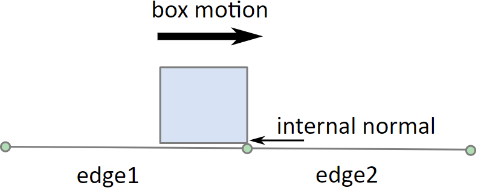
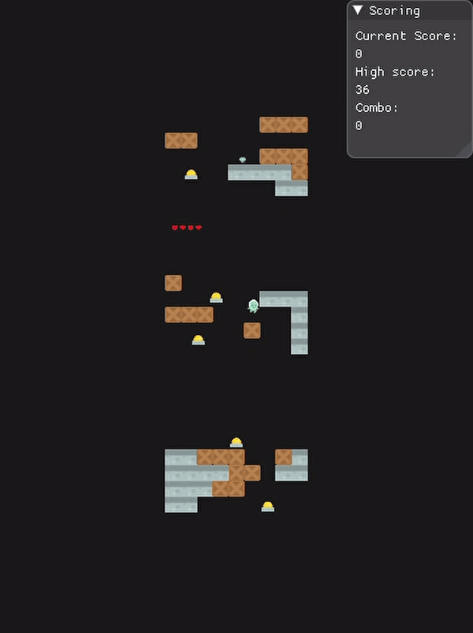
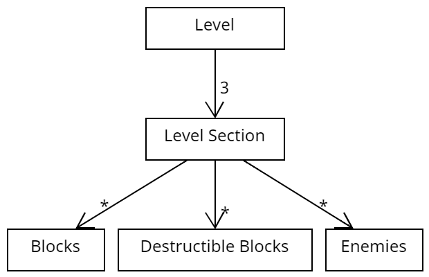

Downspace
Downspace was made for the course Game Programming, part of the MSc in Games education. We were a team of 3 programmers. The game is made in a proprietary engine, SRE (Simple Render Engine), from our university that we built on top of.
-
Both the game and the engine are written completely in C++. The game is based on Downwell, a precision platformer.
- Player Movement
- Level Generation
- Engine modification and optimization
My main tasks were:
Player Movement
Downspace is a precision platformer, so a lot of focus was put on the collision and physics working properly. One of the requirements for the project was to use a 3rd party physics library, we used Box2D which is a 2D rigid body simulation library. In Downspace the ground is made up of a series of blocks, this caused a bug where the player could collide with internal vertices when moving over the blocks. This not only messed with our grounded checking, but would also stop the player from moving. Box2D provides a solution in the form of chain shapes, but this would require us to dynamically calculate the outline of our levels and create a series of vertices for the collision chain.

To fix the problems, we started by making the player character use a circle collider instead of a box collider.
This lets the player move on top of the blocks without getting blocked by the ghost collisions.
Then, we needed a solution for checking if the player is grounded. For this, we developed a system
that could handle multiple contact points and filter out the ghost collisions.
With this the player can move freely on the blocks and we are able to have really reliable grounded checking. When the player attempts to jump, one of three things will happen: Jump, shoot, or nothing. This depends on if the button was pressed and not held, if the player is grounded, coyote time (a short time frame after leaving the ground where we can still jump), and if the player has bullets.
bool ComponentFootContact::CanJump() { bool coyote = (MyEngine::Engine::GetInstance()->GetTime() - _lastGroundedTime) < _coyoteTime; return _isGrounded || coyote; } void ComponentFootContact::OnCollisionStart(ComponentPhysicsBody* other, b2Manifold* manifold) { if (!other->GetGameObject().lock()->GetName().rfind("Block", 0) == 0 || manifold->localNormal.y < 0.5f) { return; } auto contact = std::shared_ptr<MyEngine::GameObject>(other->GetGameObject()); _contacts.push_back(contact); if (_isGrounded == false) { _isGrounded = true; if (!_score.expired()) { _score.lock()->ResetCombo(); } if (!_shooter.expired()) { _shooter.lock()->ReloadMag(); } } } void ComponentFootContact::OnCollisionEnd(ComponentPhysicsBody* other, b2Manifold* manifold) { if (!other->GetGameObject().lock()->GetName().rfind("Block", 0) == 0) { // Sometimes the end collision is more on the side than the start collision, // so we ignore the contact normal here return; } auto c_iter = _contacts.begin(); while (c_iter != _contacts.end()) { if (c_iter->expired()) { c_iter = _contacts.erase(c_iter); continue; } if (c_iter->lock() == other->GetGameObject().lock()) { c_iter = _contacts.erase(c_iter); break; } c_iter++; } if (_contacts.empty()) { _lastGroundedTime = MyEngine::Engine::GetInstance()->GetTime(); _isGrounded = false; } }
Level Generation
The game has one infinite level populated with blocks for the player to stand on and enemies to eliminate. The infinite level effect is achieved by having three level sections, so there is always a section above and below the player.
 Each of the three level sections is responsible for the blocks and enemies inside it. The section receives a string representing the layout from the Level class, then it goes through each character and places a block or enemy at a location according to the character's index in the string.
The blocks in the level are stored in an object pool. Object pooling is a common design pattern that can help performance when creating and destroying an object is expensive.
Sprite Batching
In the handout code we received, the engine would send each sprite to the GPU in its own draw call, which quickly became very slow. I reworking the engine and sprite renderer component to use sprite batching, after which we measured the average rendering time to be about 4 times faster.
-
The sprite renderer receives a sprite batch builder that it can add its sprite to.
void ComponentRendererSprite::Render(sre::SpriteBatch::SpriteBatchBuilder& builder) { if (!_isActive) return; auto gameObject = GetGameObject().lock(); if (!gameObject) return; glm::vec3 gameObjectPos = gameObject->GetPosition(); _sprite.setPosition({ gameObjectPos.x + _offset.x, gameObjectPos.y + _offset.y}); builder.addSprite(_sprite); }
void Engine::Render() { sre::RenderPass renderPass = sre::RenderPass::create() .withCamera(_camera) .withClearColor(true, _backgroundColor) .build(); // rendering sprites auto builder = sre::SpriteBatch::create(); if (auto root = _root.lock()) root->Render(builder); auto world = builder.build(); renderPass.draw(world); }